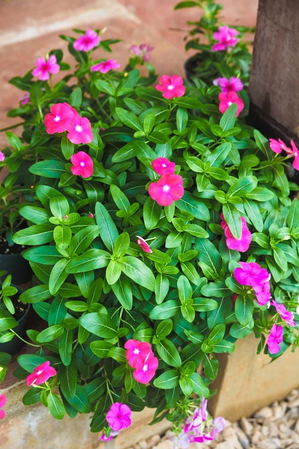
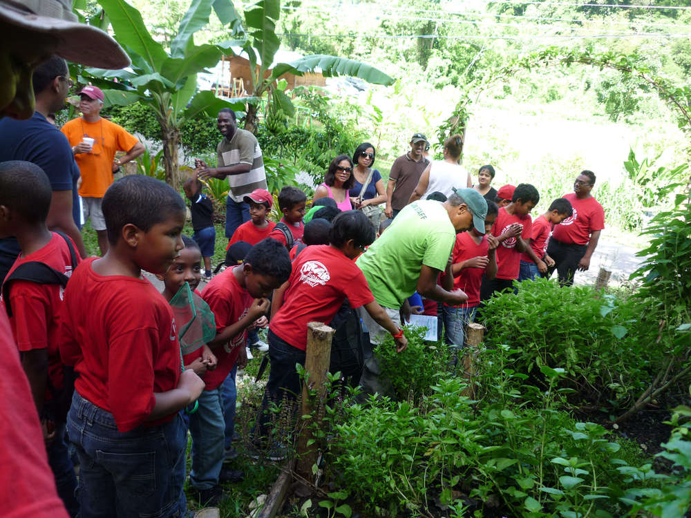
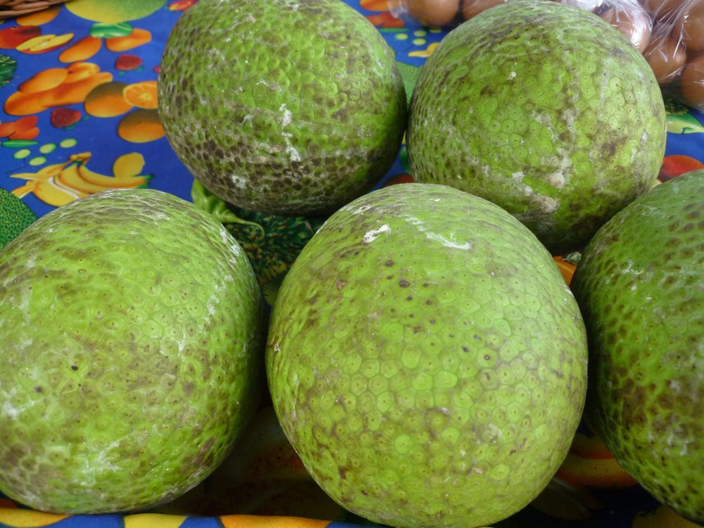
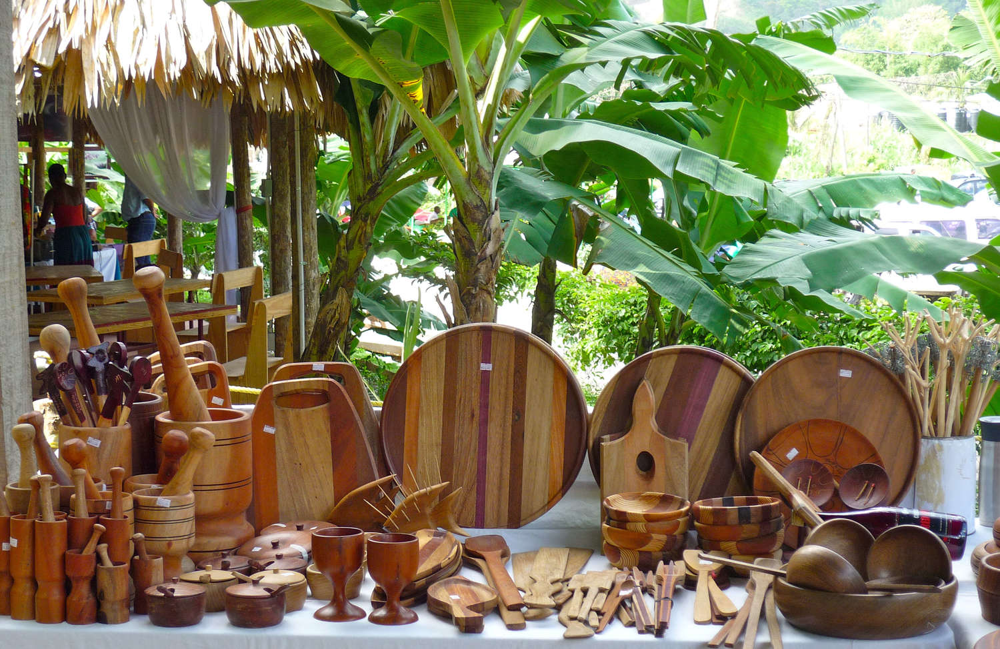
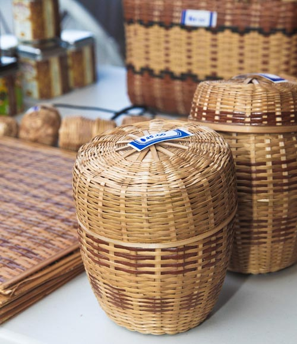
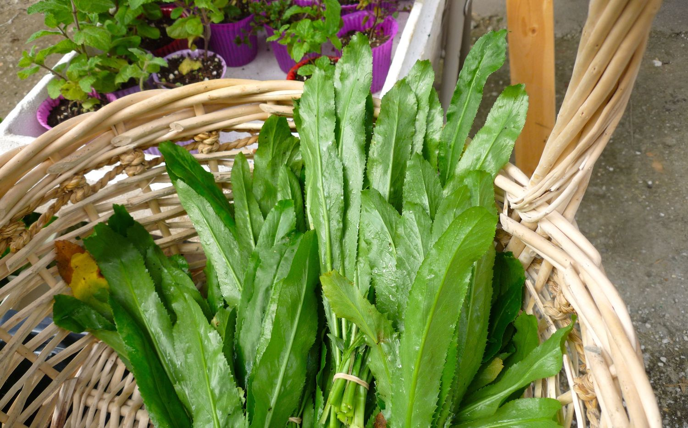
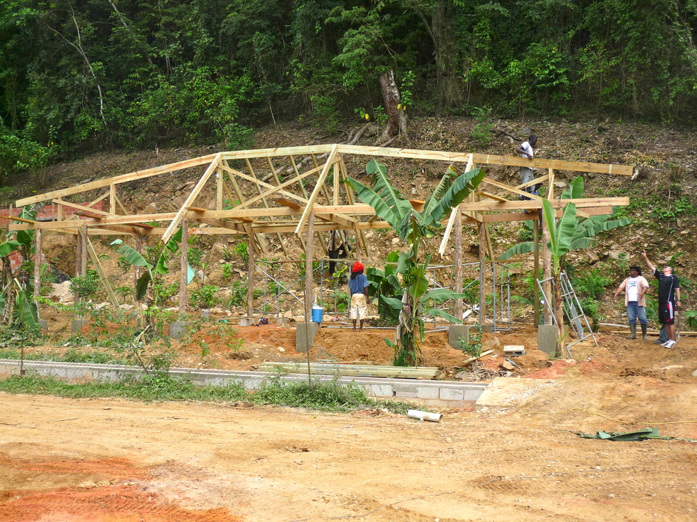

Welcome to Green Market Santa Cruz!
Green Market Santa Cruz is an ongoing experiment in community based sustainable development
A social enterprise has social objectives. The Green Market has three:
- To change existing patterns of production and consumption by linking farmers and garden growers directly to consumers.
- To foster land-based and artisanal entrepreneurship and thereby increase its perceived quality and value.
- To recreate a “village green” where individuals, families and communities can reconnect with Nature and each other.
The Green Market strives to remind its visitors and patrons of the awe-inspiring beauty
and bounty of nature and consequently encourages responsible voluntary eco-conscious behaviour
to preserve and protect that beauty and bounty.






